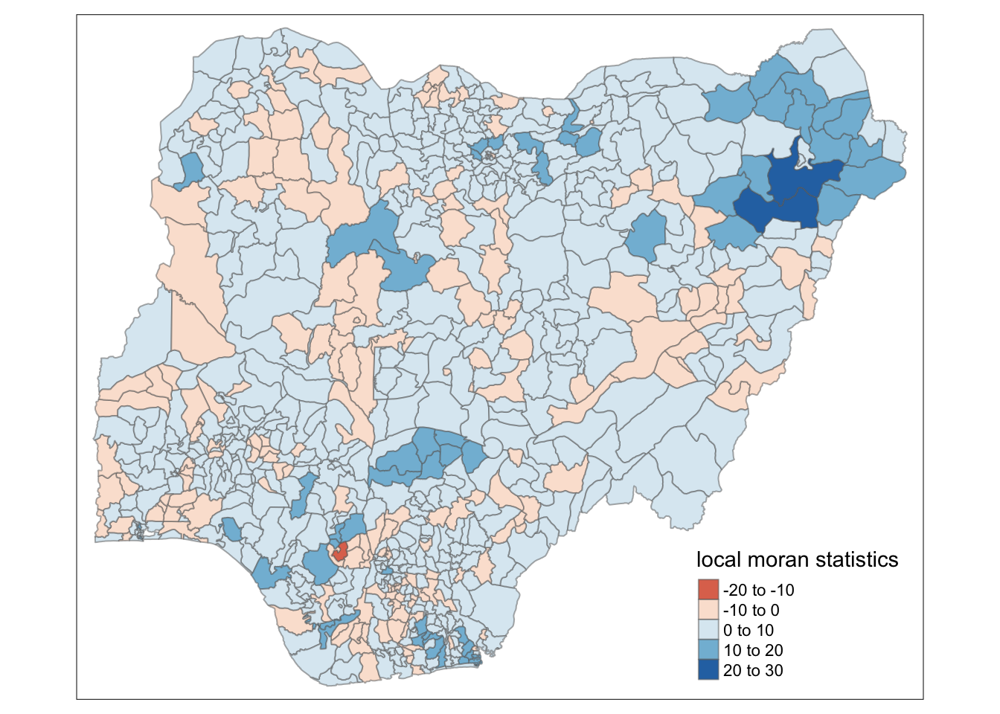
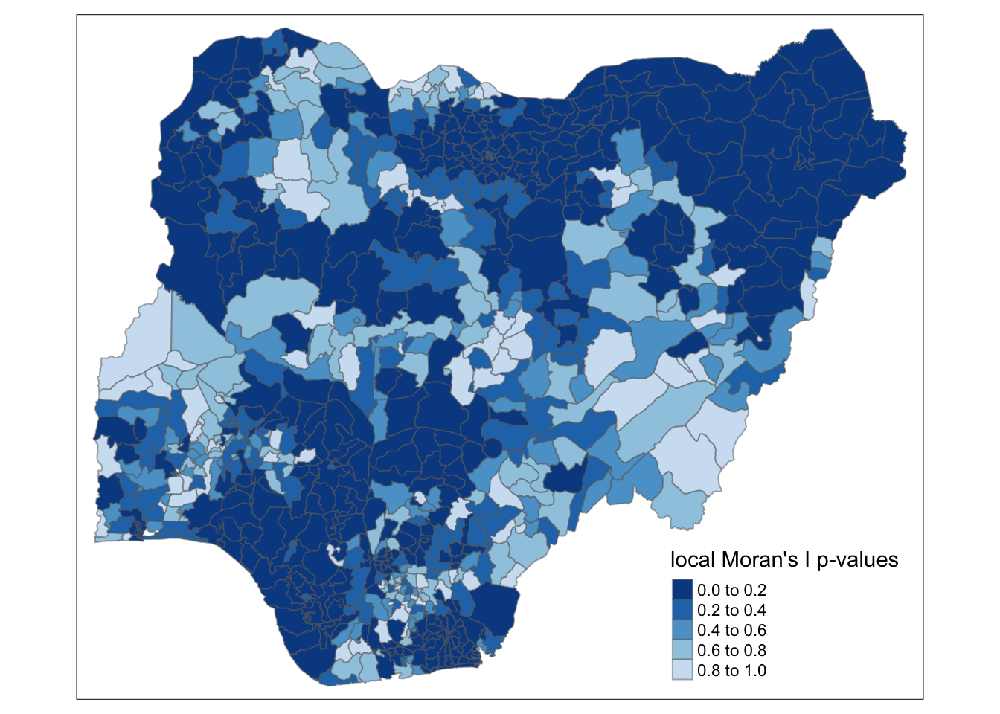
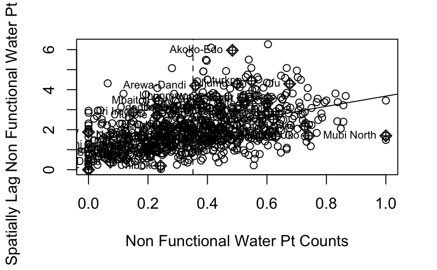
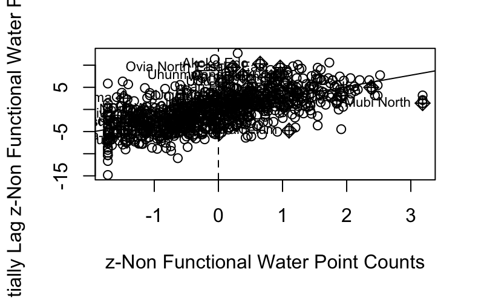
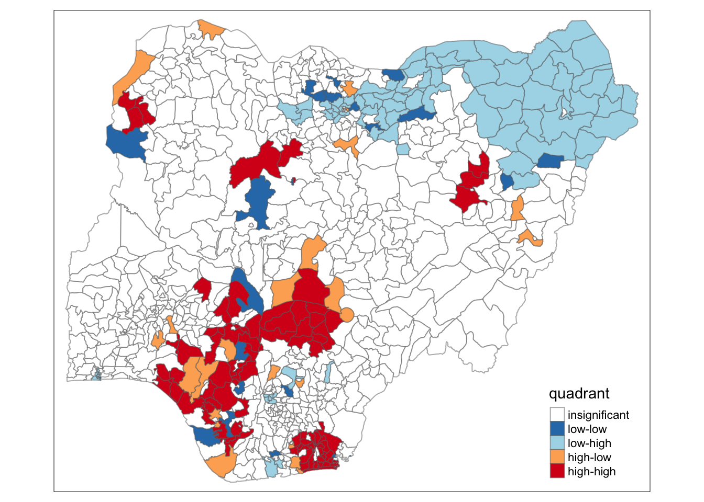
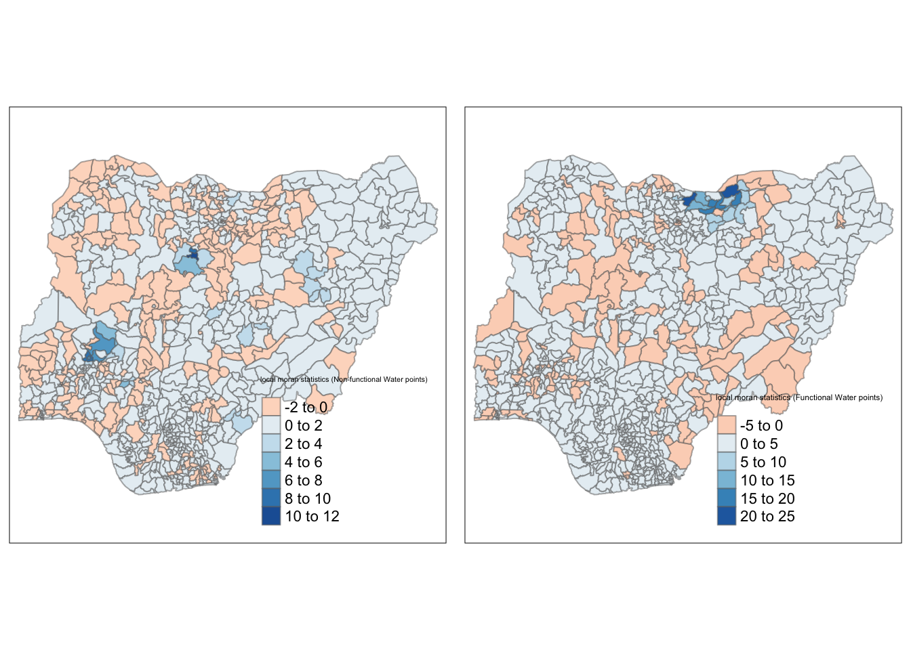
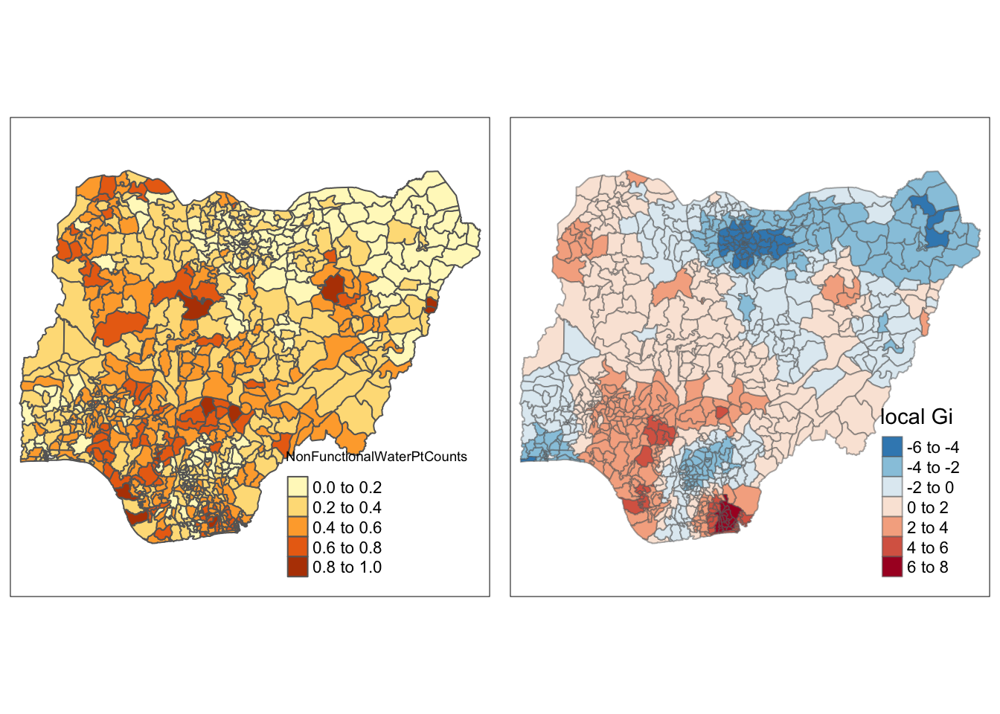
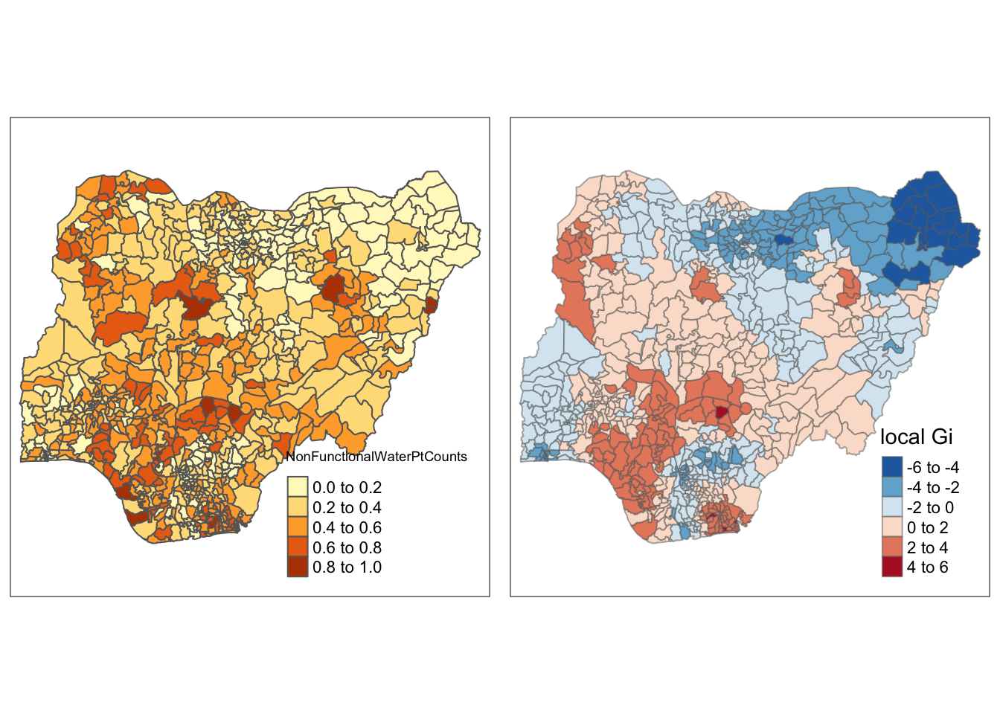

pacman::p_load(spdep, sf, tidyverse, tmap)Take-home Exercise 1: Geospatial Analytics for Social Good
1. Overview
In this exercise, we will use geospatial analytics to analyse spatial patterns of non-functional water points. We will be looking into Nigeria’s data for the purpose of this study. The below packages will be used for analysing and visualising the data:
the spdep package will be used for computation of Global and Local Measure of Spatial Autocorrelation (GLSA). This includes:
plotting of the Moran scatterplot
computing and plotting the spatial correlogram by using appropriate functions within the package
computing the Local Indicator of Spatial Association (LISA) statistics. Specific functions will be used for the computations
computing the Getis-Ord’s Gi statistics to detect hot spot and/or cold spot areas by using appropriate functions within the package
specific functions of the sf package will be used to import the geospatial data (shapefile format)
specific functions of the readr package will be used to import the aspatial data (csv format)
appropriate tidyr and dplyr methods will be used for deriving the proportion of functional and non-functional water point counts at Local Government Area (LGA) level.
the tmap package will be used for visualisation of the analysis output, with respect to:
plotting of maps to show the spatial distribution of functional and non-functional water point counts at LGA level (thematic mapping technique).
plotting of hotspot areas and outliers/clusters maps of functional and non-functional water point counts at LGA level (thematic mapping technique).
2. Getting Started
2.1 The issue
Clean water is essential for survival, and thus is a valuable resource. However, over 40% of the global population still do not have access to sufficient clean water. This is especially common in the developing countries, where they are most affected by water shortages and poor water quality. Almost 80% of illnesses in the developing countries are caused by inadequacy of clean water and sanitation. This is especially prevalent in countries situated in the Africa continent.
To counter the issue of providing clean and sustainable water to the developing countries, the Water Point Data Exchange (WPdx) project is initiated. Its objective is to collect water point related data (based on WPDx Data Standard) from rural areas at the water point or small water scheme level, and publish the data on WPdx’s data repository. This repository is publicly accessible.
2.2 Objective
Hence, in this study, we are interested to examine the spatial patterns of water points in Nigeria, with particular focus on the Non Functional water points. Spatial Association techniques from various R packages will be used to develop our analysis.
2.3 The Data
Two sets of data will be used in this study.
2.3.1 Geospatial
Nigeria Level-2 Administrative Boundary (also known as Local Government Area) polygon features GIS data, extracted from geoBoundaries in shapefile format.
2.3.2 Aspatial
The WPdx+ data in csv format, extracted from WPdx Global Data Repositories.
2.4 Setting up the analytical tools
To ensure that the codes are properly run, the spdep, sf, tidyverse and tmap packages will need to be installed in R.
spdep will be used for computation of spatial weights, spatial autocorrelation statistics;
sf will be used for importing and handling of geospatial data in R;
tidyverse will be used for wrangling attribute data in R; and
tmap will be used to prepare for visualisation of analysis output.
The code chunk below is used to create a package list containing the required R packages, and launching them into the R environment (assuming that these packages have already been installed in R).
3. Getting the Data into R Environment
In this section, we will be importing the geospatial and aspatial data into the R environment.
3.1 Importing the geospatial data into R Environment
st_read() of sf package is used to import the data in ESRI shapefile format.
nl2ab <- st_read(dsn = "data/geospatial",
layer = "geoBoundaries-NGA-ADM2")Reading layer `geoBoundaries-NGA-ADM2' from data source
`/Users/Yimin/ISSS624/Take-home_Ex/Take-home_Ex1/data/geospatial'
using driver `ESRI Shapefile'
Simple feature collection with 774 features and 5 fields
Geometry type: MULTIPOLYGON
Dimension: XY
Bounding box: xmin: 2.668534 ymin: 4.273007 xmax: 14.67882 ymax: 13.89442
Geodetic CRS: WGS 843.2 Importing the aspatial data into R Environment
Next, we will use the read_csv() method of readr package to import the csv file.
nigeria <- read_csv("data/aspatial/nigeria.csv")Warning: One or more parsing issues, call `problems()` on your data frame for details,
e.g.:
dat <- vroom(...)
problems(dat)Rows: 95008 Columns: 70
── Column specification ────────────────────────────────────────────────────────
Delimiter: ","
chr (38): #source, #report_date, #status_id, #water_source_clean, #water_sou...
dbl (20): row_id, #lat_deg, #lon_deg, #install_year, #distance_to_primary_ro...
lgl (12): #clean_adm3, #clean_adm4, #installer, #rehab_year, #rehabilitator,...
ℹ Use `spec()` to retrieve the full column specification for this data.
ℹ Specify the column types or set `show_col_types = FALSE` to quiet this message.4. Checking the content of the imported data
4.1 Using glimpse()
glimpse() of the dplyr package allows us to have an overview of the attributes present in the geospatial data.
glimpse(nl2ab)Rows: 774
Columns: 6
$ shapeName <chr> "Aba North", "Aba South", "Abadam", "Abaji", "Abak", "Abaka…
$ Level <chr> "ADM2", "ADM2", "ADM2", "ADM2", "ADM2", "ADM2", "ADM2", "AD…
$ shapeID <chr> "NGA-ADM2-72505758B79815894", "NGA-ADM2-72505758B67905963",…
$ shapeGroup <chr> "NGA", "NGA", "NGA", "NGA", "NGA", "NGA", "NGA", "NGA", "NG…
$ shapeType <chr> "ADM2", "ADM2", "ADM2", "ADM2", "ADM2", "ADM2", "ADM2", "AD…
$ geometry <MULTIPOLYGON [°]> MULTIPOLYGON (((7.401109 5...., MULTIPOLYGON (…From the output above, we can see that all the columns except the ‘geometry’ column are in “chr” data type. The ‘shapeName’ column features the various LGAs within Nigeria.
The st_crs() of sf package can be used to identify the coordinate system used in the data set.
st_crs(nl2ab)Coordinate Reference System:
User input: WGS 84
wkt:
GEOGCRS["WGS 84",
ENSEMBLE["World Geodetic System 1984 ensemble",
MEMBER["World Geodetic System 1984 (Transit)"],
MEMBER["World Geodetic System 1984 (G730)"],
MEMBER["World Geodetic System 1984 (G873)"],
MEMBER["World Geodetic System 1984 (G1150)"],
MEMBER["World Geodetic System 1984 (G1674)"],
MEMBER["World Geodetic System 1984 (G1762)"],
MEMBER["World Geodetic System 1984 (G2139)"],
ELLIPSOID["WGS 84",6378137,298.257223563,
LENGTHUNIT["metre",1]],
ENSEMBLEACCURACY[2.0]],
PRIMEM["Greenwich",0,
ANGLEUNIT["degree",0.0174532925199433]],
CS[ellipsoidal,2],
AXIS["geodetic latitude (Lat)",north,
ORDER[1],
ANGLEUNIT["degree",0.0174532925199433]],
AXIS["geodetic longitude (Lon)",east,
ORDER[2],
ANGLEUNIT["degree",0.0174532925199433]],
USAGE[
SCOPE["Horizontal component of 3D system."],
AREA["World."],
BBOX[-90,-180,90,180]],
ID["EPSG",4326]]As seen above, the nl2ab data set is currently using WGS 84 (geographic) coordinate system. However, using WGS 84 may not be appropriate if the analysis needs to use distance and/or area measurements, which is required in this exercise.
In point 5. (Working with projections), we aim to transform the coordinate system to Nigeria’s projected coordinate system.
Next, let’s use glimpse() to take a look at nigeria’s data set.
glimpse(nigeria)Rows: 95,008
Columns: 70
$ row_id <dbl> 429068, 222071, 160612, 160669, 160642, …
$ `#source` <chr> "GRID3", "Federal Ministry of Water Reso…
$ `#lat_deg` <dbl> 7.980000, 6.964532, 6.486940, 6.727570, …
$ `#lon_deg` <dbl> 5.120000, 3.597668, 7.929720, 7.648670, …
$ `#report_date` <chr> "08/29/2018 12:00:00 AM", "08/16/2015 12…
$ `#status_id` <chr> "Unknown", "Yes", "Yes", "Yes", "Yes", "…
$ `#water_source_clean` <chr> NA, "Borehole", "Borehole", "Borehole", …
$ `#water_source_category` <chr> NA, "Well", "Well", "Well", "Well", "Wel…
$ `#water_tech_clean` <chr> "Tapstand", "Mechanized Pump", "Hand Pum…
$ `#water_tech_category` <chr> "Tapstand", "Mechanized Pump", "Hand Pum…
$ `#facility_type` <chr> "Improved", "Improved", "Improved", "Imp…
$ `#clean_country_name` <chr> "Nigeria", "Nigeria", "Nigeria", "Nigeri…
$ `#clean_adm1` <chr> "Ekiti", "Ogun", "Ebonyi", "Enugu", "Enu…
$ `#clean_adm2` <chr> "Moba", "Obafemi-Owode", "Ohaukwu", "Isi…
$ `#clean_adm3` <lgl> NA, NA, NA, NA, NA, NA, NA, NA, NA, NA, …
$ `#clean_adm4` <lgl> NA, NA, NA, NA, NA, NA, NA, NA, NA, NA, …
$ `#install_year` <dbl> NA, NA, NA, NA, NA, NA, NA, 2016, 2016, …
$ `#installer` <lgl> NA, NA, NA, NA, NA, NA, NA, NA, NA, NA, …
$ `#rehab_year` <lgl> NA, NA, NA, NA, NA, NA, NA, NA, NA, NA, …
$ `#rehabilitator` <lgl> NA, NA, NA, NA, NA, NA, NA, NA, NA, NA, …
$ `#management_clean` <chr> NA, "Other", NA, NA, NA, NA, NA, NA, NA,…
$ `#status_clean` <chr> NA, "Functional", NA, NA, NA, NA, NA, NA…
$ `#pay` <chr> NA, "No", NA, NA, NA, NA, NA, NA, NA, NA…
$ `#fecal_coliform_presence` <lgl> NA, NA, NA, NA, NA, NA, NA, NA, NA, NA, …
$ `#fecal_coliform_value` <lgl> NA, NA, NA, NA, NA, NA, NA, NA, NA, NA, …
$ `#subjective_quality` <chr> NA, "Acceptable quality", NA, NA, NA, NA…
$ `#activity_id` <chr> "1a117ba2-5256-4801-874c-f7611a4499dd", …
$ `#scheme_id` <lgl> NA, NA, NA, NA, NA, NA, NA, NA, NA, NA, …
$ `#wpdx_id` <chr> "6FV7X4JC+222", "6FR5XH7X+R37", "6FR9FWP…
$ `#notes` <chr> "Tap Water", "Ajura", NA, NA, NA, NA, NA…
$ `#orig_lnk` <chr> "https://nigeria.africageoportal.com/dat…
$ `#photo_lnk` <chr> NA, NA, NA, NA, NA, NA, NA, NA, NA, NA, …
$ `#country_id` <chr> "NG", "NG", "NG", "NG", "NG", "NG", "NG"…
$ `#data_lnk` <chr> "https://catalog.waterpointdata.org/data…
$ `#distance_to_primary_road` <dbl> 767.3742, 13364.9005, 9492.7619, 9319.08…
$ `#distance_to_secondary_road` <dbl> 921.79187, 48.87743, 4333.34279, 23276.3…
$ `#distance_to_tertiary_road` <dbl> 3146.733237, 4167.519068, 693.211204, 30…
$ `#distance_to_city` <dbl> 41049.944, 13898.649, 27381.922, 34823.6…
$ `#distance_to_town` <dbl> 959.365, 9405.783, 72060.118, 31665.447,…
$ water_point_history <chr> "{\"2018-08-29\": {\"source\": \"GRID3\"…
$ rehab_priority <dbl> NA, NA, NA, NA, NA, NA, NA, NA, NA, NA, …
$ water_point_population <dbl> NA, 140, 0, 492, 868, 81, 0, 9969, 933, …
$ local_population_1km <dbl> NA, 887, 0, 492, 1919, 81, 0, 13740, 933…
$ crucialness_score <dbl> NA, 0.1578354, NA, 1.0000000, 0.4523189,…
$ pressure_score <dbl> NA, 0.1400000, NA, 1.6400000, 2.8933333,…
$ usage_capacity <dbl> 250, 1000, 300, 300, 300, 300, 300, 1000…
$ is_urban <lgl> TRUE, FALSE, FALSE, FALSE, FALSE, FALSE,…
$ days_since_report <dbl> 1483, 2592, 655, 655, 655, 655, 655, 217…
$ staleness_score <dbl> 62.65911, 44.17405, 81.34550, 81.34550, …
$ latest_record <lgl> TRUE, TRUE, TRUE, TRUE, TRUE, TRUE, TRUE…
$ location_id <dbl> 358773, 264633, 397972, 397984, 397982, …
$ cluster_size <dbl> 1, 1, 1, 1, 1, 1, 1, 1, 1, 1, 1, 1, 1, 1…
$ `#clean_country_id` <chr> "NGA", "NGA", "NGA", "NGA", "NGA", "NGA"…
$ `#country_name` <chr> "Nigeria", "Nigeria", "Nigeria", "Nigeri…
$ `#water_source` <chr> "Tap", "Improved Tube well or borehole",…
$ `#water_tech` <chr> NA, "Motorised", NA, NA, NA, NA, NA, "Su…
$ `#status` <chr> NA, "Functional (and in use)", NA, NA, N…
$ `#adm2` <chr> NA, "Obafemi-Owode", NA, NA, NA, NA, NA,…
$ `#adm3` <chr> NA, NA, NA, NA, NA, NA, NA, NA, NA, NA, …
$ `#management` <chr> NA, "Other", NA, NA, NA, NA, NA, NA, NA,…
$ `#adm1` <chr> NA, "Ogun", "Enugu", "Enugu", "Enugu", "…
$ `New Georeferenced Column` <chr> "POINT (5.12 7.98)", "POINT (3.5976683 6…
$ lat_deg_original <lgl> NA, NA, NA, NA, NA, NA, NA, NA, NA, NA, …
$ lat_lon_deg <chr> "(7.98°, 5.12°)", "(6.9645317°, 3.597668…
$ lon_deg_original <lgl> NA, NA, NA, NA, NA, NA, NA, NA, NA, NA, …
$ public_data_source <chr> "https://catalog.waterpointdata.org/data…
$ converted <chr> NA, "#status_id, #water_source, #pay, #s…
$ count <dbl> 1, 1, 1, 1, 1, 1, 1, 1, 1, 1, 1, 1, 1, 1…
$ created_timestamp <chr> "12/6/21 21:12", "06/30/2020 12:56:07 PM…
$ updated_timestamp <chr> "12/6/21 21:12", "06/30/2020 12:56:07 PM…The nigeria dataset imported shows a comprehensive list of information. We can see that under the ‘clean_adm2’ column, it features the names of LGAs in Nigeria. In step 7, we will use geoprocessing methods from the sf package, to transform the nigeria data set into a simple feature data frame, with Nigeria’s projected coordinate system.
5. Working with projections
Map projection is an important aspect of geospatial data, and to ensure proper analysis at later steps, all data sets used in this data will follow Nigeria’s projected coordinate system (EPSG 26391).
5.1 Assigning EPSG code to geospatial data
st_transform() of sf package is used to transform the geospatial data from WGS 84 coordinate system to EPSG 26391. We will use it to transform the nl2ab data set into Nigeria’s projected coordinate system.
nl2ab26391 <- st_transform(nl2ab, crs=26391)6. Converting the aspatial data
6.1 Creating a simple feature data frame from an aspatial data frame
The code chunk below converts the nigeria data frame into a simple feature data frame. This is done by using st_as_sf() of sf packages.
nigeria26391 <- st_as_sf(nigeria,
coords = c("#lon_deg", "#lat_deg"),
crs=4326) %>%
st_transform(crs = 26391)The below arguments are passed to the st_as_sf()in order to ensure that the data frame is in the output as required for this study.
coords –> to provide the column name of the x-coordinates, followed by the column name of the y-coordinates
crs –> to provide the coordinates system in epsg format. EPSG: 4326 is wgs84 Geographic Coordinate System and EPSG: 26391 is Nigeria’s SVY21 Projected Coordinate System.
%>% –> to transform the newly created simple data frame (nigeria_sf) into svy21 projected coordinates system.
Now we will examine this newly created data frame using glimpse().
glimpse(nigeria26391)Rows: 95,008
Columns: 69
$ row_id <dbl> 429068, 222071, 160612, 160669, 160642, …
$ `#source` <chr> "GRID3", "Federal Ministry of Water Reso…
$ `#report_date` <chr> "08/29/2018 12:00:00 AM", "08/16/2015 12…
$ `#status_id` <chr> "Unknown", "Yes", "Yes", "Yes", "Yes", "…
$ `#water_source_clean` <chr> NA, "Borehole", "Borehole", "Borehole", …
$ `#water_source_category` <chr> NA, "Well", "Well", "Well", "Well", "Wel…
$ `#water_tech_clean` <chr> "Tapstand", "Mechanized Pump", "Hand Pum…
$ `#water_tech_category` <chr> "Tapstand", "Mechanized Pump", "Hand Pum…
$ `#facility_type` <chr> "Improved", "Improved", "Improved", "Imp…
$ `#clean_country_name` <chr> "Nigeria", "Nigeria", "Nigeria", "Nigeri…
$ `#clean_adm1` <chr> "Ekiti", "Ogun", "Ebonyi", "Enugu", "Enu…
$ `#clean_adm2` <chr> "Moba", "Obafemi-Owode", "Ohaukwu", "Isi…
$ `#clean_adm3` <lgl> NA, NA, NA, NA, NA, NA, NA, NA, NA, NA, …
$ `#clean_adm4` <lgl> NA, NA, NA, NA, NA, NA, NA, NA, NA, NA, …
$ `#install_year` <dbl> NA, NA, NA, NA, NA, NA, NA, 2016, 2016, …
$ `#installer` <lgl> NA, NA, NA, NA, NA, NA, NA, NA, NA, NA, …
$ `#rehab_year` <lgl> NA, NA, NA, NA, NA, NA, NA, NA, NA, NA, …
$ `#rehabilitator` <lgl> NA, NA, NA, NA, NA, NA, NA, NA, NA, NA, …
$ `#management_clean` <chr> NA, "Other", NA, NA, NA, NA, NA, NA, NA,…
$ `#status_clean` <chr> NA, "Functional", NA, NA, NA, NA, NA, NA…
$ `#pay` <chr> NA, "No", NA, NA, NA, NA, NA, NA, NA, NA…
$ `#fecal_coliform_presence` <lgl> NA, NA, NA, NA, NA, NA, NA, NA, NA, NA, …
$ `#fecal_coliform_value` <lgl> NA, NA, NA, NA, NA, NA, NA, NA, NA, NA, …
$ `#subjective_quality` <chr> NA, "Acceptable quality", NA, NA, NA, NA…
$ `#activity_id` <chr> "1a117ba2-5256-4801-874c-f7611a4499dd", …
$ `#scheme_id` <lgl> NA, NA, NA, NA, NA, NA, NA, NA, NA, NA, …
$ `#wpdx_id` <chr> "6FV7X4JC+222", "6FR5XH7X+R37", "6FR9FWP…
$ `#notes` <chr> "Tap Water", "Ajura", NA, NA, NA, NA, NA…
$ `#orig_lnk` <chr> "https://nigeria.africageoportal.com/dat…
$ `#photo_lnk` <chr> NA, NA, NA, NA, NA, NA, NA, NA, NA, NA, …
$ `#country_id` <chr> "NG", "NG", "NG", "NG", "NG", "NG", "NG"…
$ `#data_lnk` <chr> "https://catalog.waterpointdata.org/data…
$ `#distance_to_primary_road` <dbl> 767.3742, 13364.9005, 9492.7619, 9319.08…
$ `#distance_to_secondary_road` <dbl> 921.79187, 48.87743, 4333.34279, 23276.3…
$ `#distance_to_tertiary_road` <dbl> 3146.733237, 4167.519068, 693.211204, 30…
$ `#distance_to_city` <dbl> 41049.944, 13898.649, 27381.922, 34823.6…
$ `#distance_to_town` <dbl> 959.365, 9405.783, 72060.118, 31665.447,…
$ water_point_history <chr> "{\"2018-08-29\": {\"source\": \"GRID3\"…
$ rehab_priority <dbl> NA, NA, NA, NA, NA, NA, NA, NA, NA, NA, …
$ water_point_population <dbl> NA, 140, 0, 492, 868, 81, 0, 9969, 933, …
$ local_population_1km <dbl> NA, 887, 0, 492, 1919, 81, 0, 13740, 933…
$ crucialness_score <dbl> NA, 0.1578354, NA, 1.0000000, 0.4523189,…
$ pressure_score <dbl> NA, 0.1400000, NA, 1.6400000, 2.8933333,…
$ usage_capacity <dbl> 250, 1000, 300, 300, 300, 300, 300, 1000…
$ is_urban <lgl> TRUE, FALSE, FALSE, FALSE, FALSE, FALSE,…
$ days_since_report <dbl> 1483, 2592, 655, 655, 655, 655, 655, 217…
$ staleness_score <dbl> 62.65911, 44.17405, 81.34550, 81.34550, …
$ latest_record <lgl> TRUE, TRUE, TRUE, TRUE, TRUE, TRUE, TRUE…
$ location_id <dbl> 358773, 264633, 397972, 397984, 397982, …
$ cluster_size <dbl> 1, 1, 1, 1, 1, 1, 1, 1, 1, 1, 1, 1, 1, 1…
$ `#clean_country_id` <chr> "NGA", "NGA", "NGA", "NGA", "NGA", "NGA"…
$ `#country_name` <chr> "Nigeria", "Nigeria", "Nigeria", "Nigeri…
$ `#water_source` <chr> "Tap", "Improved Tube well or borehole",…
$ `#water_tech` <chr> NA, "Motorised", NA, NA, NA, NA, NA, "Su…
$ `#status` <chr> NA, "Functional (and in use)", NA, NA, N…
$ `#adm2` <chr> NA, "Obafemi-Owode", NA, NA, NA, NA, NA,…
$ `#adm3` <chr> NA, NA, NA, NA, NA, NA, NA, NA, NA, NA, …
$ `#management` <chr> NA, "Other", NA, NA, NA, NA, NA, NA, NA,…
$ `#adm1` <chr> NA, "Ogun", "Enugu", "Enugu", "Enugu", "…
$ `New Georeferenced Column` <chr> "POINT (5.12 7.98)", "POINT (3.5976683 6…
$ lat_deg_original <lgl> NA, NA, NA, NA, NA, NA, NA, NA, NA, NA, …
$ lat_lon_deg <chr> "(7.98°, 5.12°)", "(6.9645317°, 3.597668…
$ lon_deg_original <lgl> NA, NA, NA, NA, NA, NA, NA, NA, NA, NA, …
$ public_data_source <chr> "https://catalog.waterpointdata.org/data…
$ converted <chr> NA, "#status_id, #water_source, #pay, #s…
$ count <dbl> 1, 1, 1, 1, 1, 1, 1, 1, 1, 1, 1, 1, 1, 1…
$ created_timestamp <chr> "12/6/21 21:12", "06/30/2020 12:56:07 PM…
$ updated_timestamp <chr> "12/6/21 21:12", "06/30/2020 12:56:07 PM…
$ geometry <POINT [m]> POINT (299162.4 439998.2), POINT (…As we can see, a new column ‘geometry’ has been added into the data frame, whilst the ‘#lon_deg’ and ‘#lat_deg’ were dropped.
4.3 Performing relational join on the geospatial and aspatial data.
Next, we will perform relational join on both the nl2ab and nigeria datasets using left_join() from the dplyr package, since they both have common LGAs in place. However, as both datasets refer to LGAs using different names, we will specify the column names to use left-join(), under the ‘by=’ argument.
# nl2ab <- left_join(nl2ab,nigeria, by=c('shapeName'='#clean_adm2'))7. Geoprocessing with the sf package
In this section, we will use the geoprocessing (GIS analysis) functions under the sf package, to perform point-in-polygon count.
7.1 Point-in-polygon count
As we are required to compute the waterpoint counts at LGA levels for the purpose of this study, the code chunk below will be executed, using st_intersects() and length(). A new column named WaterPtCounts will be added to the nl2ab26391 simple feature data frame, showing the water point counts at respective LGAs’.
nl2ab26391$'WaterPtCounts' <- lengths(st_intersects(nl2ab26391, nigeria26391))We will then take a look at the summary statistics of the newly derived WaterPtCounts field by using summary().
summary(nl2ab26391) shapeName Level shapeID shapeGroup
Length:774 Length:774 Length:774 Length:774
Class :character Class :character Class :character Class :character
Mode :character Mode :character Mode :character Mode :character
shapeType geometry WaterPtCounts
Length:774 MULTIPOLYGON :774 Min. : 0.0
Class :character epsg:26391 : 0 1st Qu.: 45.0
Mode :character +proj=tmer...: 0 Median : 96.0
Mean :122.7
3rd Qu.:168.8
Max. :894.0 7.2 Point-in-polygon to identify proportion of functional / non-functional water points at LGA levels
From step 4.1 (Using glimpse()), we can see that the nigeria26391 data frame indicates if the water point is functional in the #status_clean column. Let’s use the unique() function to identify the words used to differentiate if the water point is functional or not.
unique(nigeria26391$`#status_clean`)[1] NA "Functional"
[3] "Abandoned/Decommissioned" "Non-Functional"
[5] "Functional but not in use" "Functional but needs repair"
[7] "Abandoned" "Non functional due to dry season"
[9] "Non-Functional due to dry season"From the above values, it seems clear that functional water points would start with the word “Functional”, and non-functional water points would start with the word “Non-Functional”/“Non functional”.
Next, we will create one filtered data set showing only the functional water points.
fn = nigeria26391 %>%
filter(str_detect(`#status_clean`, '^(Functional)'))We will then create another filtered data set showing only the non-functional water points.
non_fn = nigeria26391 %>%
filter(str_detect(`#status_clean`, '^(Non-Functional|Non Functional)'))Now that we have 2 new data sets fn and non-fn, we will use point-in polygon to compute the number of functional and non-functional water points at LGA levels.
The FunctionalWaterPtCounts column is created to show functional water point counts at LGA levels.
nl2ab26391$'FunctionalWaterPtCounts' <- lengths(st_intersects(nl2ab26391, fn))The NonFunctionalWaterPtCounts column is created to show non-functional water point counts at LGA levels.
nl2ab26391$'NonFunctionalWaterPtCounts' <- lengths(st_intersects(nl2ab26391, non_fn))Let’s have a look to see if data is properly captured using glimpse().
glimpse(nl2ab26391)Rows: 774
Columns: 9
$ shapeName <chr> "Aba North", "Aba South", "Abadam", "Abaji"…
$ Level <chr> "ADM2", "ADM2", "ADM2", "ADM2", "ADM2", "AD…
$ shapeID <chr> "NGA-ADM2-72505758B79815894", "NGA-ADM2-725…
$ shapeGroup <chr> "NGA", "NGA", "NGA", "NGA", "NGA", "NGA", "…
$ shapeType <chr> "ADM2", "ADM2", "ADM2", "ADM2", "ADM2", "AD…
$ geometry <MULTIPOLYGON [m]> MULTIPOLYGON (((552560.3 12...…
$ WaterPtCounts <int> 17, 71, 0, 57, 48, 233, 34, 119, 152, 66, 3…
$ FunctionalWaterPtCounts <int> 7, 29, 0, 23, 23, 82, 16, 72, 79, 18, 25, 5…
$ NonFunctionalWaterPtCounts <int> 9, 33, 0, 34, 22, 42, 15, 33, 60, 25, 12, 7…Now that we have the data properly captured, we shall use mutate() of dplyr package to compute the proportion of functional/non-functional water points at LGA levels.
nl2ab26391 <- nl2ab26391 %>%
mutate(`FunctionalWaterPtCounts` = `FunctionalWaterPtCounts`/`WaterPtCounts`)nl2ab26391 <- nl2ab26391 %>%
mutate(`NonFunctionalWaterPtCounts` = `NonFunctionalWaterPtCounts`/`WaterPtCounts`)Let’s use head() to see see how the first 5 records have been captured in nl2ab26391 data set.
head(nl2ab26391)Simple feature collection with 6 features and 8 fields
Geometry type: MULTIPOLYGON
Dimension: XY
Bounding box: xmin: 481557.7 ymin: 98997.75 xmax: 1245549 ymax: 1092644
Projected CRS: Minna / Nigeria West Belt
shapeName Level shapeID shapeGroup shapeType
1 Aba North ADM2 NGA-ADM2-72505758B79815894 NGA ADM2
2 Aba South ADM2 NGA-ADM2-72505758B67905963 NGA ADM2
3 Abadam ADM2 NGA-ADM2-72505758B57073987 NGA ADM2
4 Abaji ADM2 NGA-ADM2-72505758B61968000 NGA ADM2
5 Abak ADM2 NGA-ADM2-72505758B39432389 NGA ADM2
6 Abakaliki ADM2 NGA-ADM2-72505758B36739173 NGA ADM2
geometry WaterPtCounts FunctionalWaterPtCounts
1 MULTIPOLYGON (((552560.3 12... 17 0.4117647
2 MULTIPOLYGON (((545153.6 12... 71 0.4084507
3 MULTIPOLYGON (((1245549 106... 0 NaN
4 MULTIPOLYGON (((510602.3 57... 57 0.4035088
5 MULTIPOLYGON (((598086 1218... 48 0.4791667
6 MULTIPOLYGON (((663801.7 25... 233 0.3519313
NonFunctionalWaterPtCounts
1 0.5294118
2 0.4647887
3 NaN
4 0.5964912
5 0.4583333
6 0.1802575We can see that some of the values under the FunctionalWaterPtCounts and NonFunctionalWaterPtCounts column are Nan, and this should be changed to 0 in order to avoid any errors in further processing of the data / analysis.
We will use the code chunk below to change the Nan values.
nl2ab26391[is.na(nl2ab26391)] = 08. Global Spatial Autocorrelation
Computing Contiguity Spatial Weights
wm_q <- poly2nb(nl2ab26391,
queen = TRUE)
summary(wm_q)Neighbour list object:
Number of regions: 774
Number of nonzero links: 4440
Percentage nonzero weights: 0.7411414
Average number of links: 5.736434
1 region with no links:
86
Link number distribution:
0 1 2 3 4 5 6 7 8 9 10 11 12 14
1 2 14 57 125 182 140 122 72 41 12 4 1 1
2 least connected regions:
138 560 with 1 link
1 most connected region:
508 with 14 linksrswm_q <- nb2listw(wm_q,
style = "B",
zero.policy = TRUE)
# print(rswm_q, zero.policy = TRUE)
# zero.policy = TRUE is set at the back to prevent error from printing due to regions with no links.9. Cluster and Outlier Analysis
9.1 Computing Local Moran’s I
The localmoran()function in the spdep package is used to compute the li values. The below code chunks are executed to compute local Moran’s I of Non-Functional Water Points at LGA levels.
fips <- order(nl2ab26391$shapeName)localMoranI <- localmoran(nl2ab26391$NonFunctionalWaterPtCounts,
rswm_q,
zero.policy = TRUE)
head(localMoranI) Ii E.Ii Var.Ii Z.Ii Pr(z != E(Ii))
1 2.013504 -0.003961724 3.0514335 1.1549259 0.248120752
2 0.649135 -0.001206752 0.9312313 0.6739270 0.500357721
3 8.926750 -0.011548189 8.8808245 2.9993574 0.002705497
4 2.167410 -0.013136324 10.0695607 0.6871634 0.491979765
5 3.046583 -0.001789059 1.3770637 2.5977118 0.009384724
6 3.567780 -0.006385569 4.8995438 1.6147187 0.106371616localmoran() function returns a matrix of values whose columns are:
Ii: the local Moran’s I statistics
E.Ii: the expectation of local moran statistic under the randomisation hypothesis
Var.Ii: the variance of local moran statistic under the randomisation hypothesis
Z.Ii: the standard deviate of local moran statistic
Pr(): the p-value of local moran statistic
9.1.1 Mapping the local Moran’s I
Before mapping the local Moran I’s map, we will append the local Moran’s I data frame (localMoranI) onto nl2ab26391 data frame. The appended data frame (i.e. SpatialPolygonDataFrame) is called nl2ab26391.localMoranI.
nl2ab26391.localMoranI <- cbind(nl2ab26391,localMoranI) %>%
rename(Pr.Ii = Pr.z....E.Ii..)9.1.2 Mapping local Moran’s I values
We will now use the choropleth mapping functions within the tmap package to plot the local Moran’s I values.
tm_shape(nl2ab26391.localMoranI) +
tm_fill(col = "Ii",
style = "pretty",
palette = "RdBu",
title = "local moran statistics") +
tm_borders(alpha = 0.5)Variable(s) "Ii" contains positive and negative values, so midpoint is set to 0. Set midpoint = NA to show the full spectrum of the color palette.
9.1.3 Mapping local Moran’s I p-values
It is also useful to consider the p-values of the li values plotted in the choropleth above. The code chunk below produces a choropleth map of Moran’s I p-values, by using functions within the tmap package. Again, we will first run the below code chunk to ensure that there are no Na values.
nl2ab26391.localMoranI[is.na(nl2ab26391.localMoranI)] = 0tm_shape(nl2ab26391.localMoranI) +
tm_fill(col = "Pr.Ii",
#breaks = c(-Inf, 0.001, 0,01, 0.05, Inf),
palette = "-Blues",
title = "local Moran's I p-values") +
tm_borders(alpha = 0.5)
10. Creating a LISA Cluster Map
10.1 Plotting Moran scatterplot
# nci <- moran.plot(nl2ab26391$NonFunctionalWaterPtCounts, rswm_q,
#labels=as.character(nl2ab26391$shapeName),
#xlab="Non Functional Water Pt Counts",
# ylab="Spatially Lag Non Functional Water Pt Counts")
nl2ab26391$Z.NonFunctionalWaterPtCounts <- scale(nl2ab26391$NonFunctionalWaterPtCounts) %>% as.vector 10.2 Plotting Moran scatterplot with standardised variable
#nci2 <- moran.plot(nl2ab26391$Z.NonFunctionalWaterPtCounts, rswm_q,
#labels=as.character(nl2ab26391$shapeName),
#xlab="z-Non Functional Water Point Counts",
#ylab="Spatially Lag z-Non Functional Water Point Counts")
10.3 Preparing LISA map classes
quadrant <- vector(mode="numeric",length=nrow(localMoranI))DV <- nl2ab26391$NonFunctionalWaterPtCounts - mean(nl2ab26391$NonFunctionalWaterPtCounts) C_mI <- localMoranI[,1] - mean(localMoranI[,1]) signif <- 0.05quadrant[DV >0 & C_mI>0] <- 4
quadrant[DV <0 & C_mI<0] <- 1
quadrant[DV <0 & C_mI>0] <- 2
quadrant[DV >0 & C_mI<0] <- 3quadrant[localMoranI[,5]>signif] <- 0Plotting LISA map
nl2ab26391.localMoranI$quadrant <- quadrant
colors <- c("#ffffff", "#2c7bb6", "#abd9e9", "#fdae61", "#d7191c")
clusters <- c("insignificant", "low-low", "low-high", "high-low", "high-high")
tm_shape(nl2ab26391.localMoranI) +
tm_fill(col = "quadrant",
style = "cat",
palette = colors[c(sort(unique(quadrant)))+1],
labels = clusters[c(sort(unique(quadrant)))+1],
popup.vars = c("")) +
tm_view(set.zoom.limits = c(11,17)) +
tm_borders(alpha=0.5)
non_fn_pts <- qtm(nl2ab26391, "NonFunctionalWaterPtCounts")
nl2ab26391.localMoranI$quadrant <- quadrant
colors <- c("#ffffff", "#2c7bb6", "#abd9e9", "#fdae61", "#d7191c")
clusters <- c("insignificant", "low-low", "low-high", "high-low", "high-high")
LISAmap <- tm_shape(nl2ab26391.localMoranI) +
tm_fill(col = "quadrant",
style = "cat",
palette = colors[c(sort(unique(quadrant)))+1],
labels = clusters[c(sort(unique(quadrant)))+1],
popup.vars = c("")) +
tm_view(set.zoom.limits = c(11,17)) +
tm_borders(alpha=0.5)
tmap_arrange(non_fn_pts, LISAmap, asp=1, ncol=2)
Statistical observation
11. Hot Spot and Cold Spot Area Analysis
11.1 Getis and Ord’s G-Statistics
11.2 Deriving distance-based weight matrix
11.2.1 Deriving the centroid
longitude <- map_dbl(nl2ab26391$geometry, ~st_centroid(.x)[[1]])latitude <- map_dbl(nl2ab26391$geometry, ~st_centroid(.x)[[2]])coords <- cbind(longitude, latitude)k1 <- knn2nb(knearneigh(coords))
k1dists <- unlist(nbdists(k1, coords))
summary(k1dists) Min. 1st Qu. Median Mean 3rd Qu. Max.
2669 12834 20304 22084 27783 72139 11.2.2 Computing fixed distance weight matrix
wm_d62 <- dnearneigh(coords, 0, max(k1dists))
wm_d62Neighbour list object:
Number of regions: 774
Number of nonzero links: 18130
Percentage nonzero weights: 3.026327
Average number of links: 23.42377 wm62_lw <- nb2listw(wm_d62, style = 'B')
summary(wm62_lw)Characteristics of weights list object:
Neighbour list object:
Number of regions: 774
Number of nonzero links: 18130
Percentage nonzero weights: 3.026327
Average number of links: 23.42377
Link number distribution:
1 2 3 4 5 6 7 8 9 10 11 12 13 14 15 16 17 18 19 20 21 22 23 24 25 26
5 9 11 22 32 35 33 34 29 35 27 18 21 23 16 12 12 11 16 17 16 10 14 10 5 13
27 28 29 30 31 32 33 34 35 36 37 38 39 40 41 42 43 44 45 46 47 48 49 50 51 52
12 5 15 13 12 7 10 8 12 5 12 17 14 9 10 4 5 3 7 6 11 8 5 5 4 2
53 54 55 56 57 58 59 60 61 62 63 64 65 67 68 70
3 3 6 3 5 6 2 5 5 8 6 6 4 3 1 1
5 least connected regions:
90 112 123 237 670 with 1 link
1 most connected region:
585 with 70 links
Weights style: B
Weights constants summary:
n nn S0 S1 S2
B 774 599076 18130 36260 262254411.3 Computing adaptive distance weight matrix
knn <- knn2nb(knearneigh(coords, k=8))
knnNeighbour list object:
Number of regions: 774
Number of nonzero links: 6192
Percentage nonzero weights: 1.033592
Average number of links: 8
Non-symmetric neighbours listknn_lw <- nb2listw(knn, style = 'B')
summary(knn_lw)Characteristics of weights list object:
Neighbour list object:
Number of regions: 774
Number of nonzero links: 6192
Percentage nonzero weights: 1.033592
Average number of links: 8
Non-symmetric neighbours list
Link number distribution:
8
774
774 least connected regions:
1 2 3 4 5 6 7 8 9 10 11 12 13 14 15 16 17 18 19 20 21 22 23 24 25 26 27 28 29 30 31 32 33 34 35 36 37 38 39 40 41 42 43 44 45 46 47 48 49 50 51 52 53 54 55 56 57 58 59 60 61 62 63 64 65 66 67 68 69 70 71 72 73 74 75 76 77 78 79 80 81 82 83 84 85 86 87 88 89 90 91 92 93 94 95 96 97 98 99 100 101 102 103 104 105 106 107 108 109 110 111 112 113 114 115 116 117 118 119 120 121 122 123 124 125 126 127 128 129 130 131 132 133 134 135 136 137 138 139 140 141 142 143 144 145 146 147 148 149 150 151 152 153 154 155 156 157 158 159 160 161 162 163 164 165 166 167 168 169 170 171 172 173 174 175 176 177 178 179 180 181 182 183 184 185 186 187 188 189 190 191 192 193 194 195 196 197 198 199 200 201 202 203 204 205 206 207 208 209 210 211 212 213 214 215 216 217 218 219 220 221 222 223 224 225 226 227 228 229 230 231 232 233 234 235 236 237 238 239 240 241 242 243 244 245 246 247 248 249 250 251 252 253 254 255 256 257 258 259 260 261 262 263 264 265 266 267 268 269 270 271 272 273 274 275 276 277 278 279 280 281 282 283 284 285 286 287 288 289 290 291 292 293 294 295 296 297 298 299 300 301 302 303 304 305 306 307 308 309 310 311 312 313 314 315 316 317 318 319 320 321 322 323 324 325 326 327 328 329 330 331 332 333 334 335 336 337 338 339 340 341 342 343 344 345 346 347 348 349 350 351 352 353 354 355 356 357 358 359 360 361 362 363 364 365 366 367 368 369 370 371 372 373 374 375 376 377 378 379 380 381 382 383 384 385 386 387 388 389 390 391 392 393 394 395 396 397 398 399 400 401 402 403 404 405 406 407 408 409 410 411 412 413 414 415 416 417 418 419 420 421 422 423 424 425 426 427 428 429 430 431 432 433 434 435 436 437 438 439 440 441 442 443 444 445 446 447 448 449 450 451 452 453 454 455 456 457 458 459 460 461 462 463 464 465 466 467 468 469 470 471 472 473 474 475 476 477 478 479 480 481 482 483 484 485 486 487 488 489 490 491 492 493 494 495 496 497 498 499 500 501 502 503 504 505 506 507 508 509 510 511 512 513 514 515 516 517 518 519 520 521 522 523 524 525 526 527 528 529 530 531 532 533 534 535 536 537 538 539 540 541 542 543 544 545 546 547 548 549 550 551 552 553 554 555 556 557 558 559 560 561 562 563 564 565 566 567 568 569 570 571 572 573 574 575 576 577 578 579 580 581 582 583 584 585 586 587 588 589 590 591 592 593 594 595 596 597 598 599 600 601 602 603 604 605 606 607 608 609 610 611 612 613 614 615 616 617 618 619 620 621 622 623 624 625 626 627 628 629 630 631 632 633 634 635 636 637 638 639 640 641 642 643 644 645 646 647 648 649 650 651 652 653 654 655 656 657 658 659 660 661 662 663 664 665 666 667 668 669 670 671 672 673 674 675 676 677 678 679 680 681 682 683 684 685 686 687 688 689 690 691 692 693 694 695 696 697 698 699 700 701 702 703 704 705 706 707 708 709 710 711 712 713 714 715 716 717 718 719 720 721 722 723 724 725 726 727 728 729 730 731 732 733 734 735 736 737 738 739 740 741 742 743 744 745 746 747 748 749 750 751 752 753 754 755 756 757 758 759 760 761 762 763 764 765 766 767 768 769 770 771 772 773 774 with 8 links
774 most connected regions:
1 2 3 4 5 6 7 8 9 10 11 12 13 14 15 16 17 18 19 20 21 22 23 24 25 26 27 28 29 30 31 32 33 34 35 36 37 38 39 40 41 42 43 44 45 46 47 48 49 50 51 52 53 54 55 56 57 58 59 60 61 62 63 64 65 66 67 68 69 70 71 72 73 74 75 76 77 78 79 80 81 82 83 84 85 86 87 88 89 90 91 92 93 94 95 96 97 98 99 100 101 102 103 104 105 106 107 108 109 110 111 112 113 114 115 116 117 118 119 120 121 122 123 124 125 126 127 128 129 130 131 132 133 134 135 136 137 138 139 140 141 142 143 144 145 146 147 148 149 150 151 152 153 154 155 156 157 158 159 160 161 162 163 164 165 166 167 168 169 170 171 172 173 174 175 176 177 178 179 180 181 182 183 184 185 186 187 188 189 190 191 192 193 194 195 196 197 198 199 200 201 202 203 204 205 206 207 208 209 210 211 212 213 214 215 216 217 218 219 220 221 222 223 224 225 226 227 228 229 230 231 232 233 234 235 236 237 238 239 240 241 242 243 244 245 246 247 248 249 250 251 252 253 254 255 256 257 258 259 260 261 262 263 264 265 266 267 268 269 270 271 272 273 274 275 276 277 278 279 280 281 282 283 284 285 286 287 288 289 290 291 292 293 294 295 296 297 298 299 300 301 302 303 304 305 306 307 308 309 310 311 312 313 314 315 316 317 318 319 320 321 322 323 324 325 326 327 328 329 330 331 332 333 334 335 336 337 338 339 340 341 342 343 344 345 346 347 348 349 350 351 352 353 354 355 356 357 358 359 360 361 362 363 364 365 366 367 368 369 370 371 372 373 374 375 376 377 378 379 380 381 382 383 384 385 386 387 388 389 390 391 392 393 394 395 396 397 398 399 400 401 402 403 404 405 406 407 408 409 410 411 412 413 414 415 416 417 418 419 420 421 422 423 424 425 426 427 428 429 430 431 432 433 434 435 436 437 438 439 440 441 442 443 444 445 446 447 448 449 450 451 452 453 454 455 456 457 458 459 460 461 462 463 464 465 466 467 468 469 470 471 472 473 474 475 476 477 478 479 480 481 482 483 484 485 486 487 488 489 490 491 492 493 494 495 496 497 498 499 500 501 502 503 504 505 506 507 508 509 510 511 512 513 514 515 516 517 518 519 520 521 522 523 524 525 526 527 528 529 530 531 532 533 534 535 536 537 538 539 540 541 542 543 544 545 546 547 548 549 550 551 552 553 554 555 556 557 558 559 560 561 562 563 564 565 566 567 568 569 570 571 572 573 574 575 576 577 578 579 580 581 582 583 584 585 586 587 588 589 590 591 592 593 594 595 596 597 598 599 600 601 602 603 604 605 606 607 608 609 610 611 612 613 614 615 616 617 618 619 620 621 622 623 624 625 626 627 628 629 630 631 632 633 634 635 636 637 638 639 640 641 642 643 644 645 646 647 648 649 650 651 652 653 654 655 656 657 658 659 660 661 662 663 664 665 666 667 668 669 670 671 672 673 674 675 676 677 678 679 680 681 682 683 684 685 686 687 688 689 690 691 692 693 694 695 696 697 698 699 700 701 702 703 704 705 706 707 708 709 710 711 712 713 714 715 716 717 718 719 720 721 722 723 724 725 726 727 728 729 730 731 732 733 734 735 736 737 738 739 740 741 742 743 744 745 746 747 748 749 750 751 752 753 754 755 756 757 758 759 760 761 762 763 764 765 766 767 768 769 770 771 772 773 774 with 8 links
Weights style: B
Weights constants summary:
n nn S0 S1 S2
B 774 599076 6192 11154 20194012. Computing Gi statistics
12.1 GI statistics using fixed distance
gi.fixed <- localG(nl2ab26391$NonFunctionalWaterPtCounts, wm62_lw)
gi.fixed [1] 2.4686953969 2.3582692767 -2.4473763644 0.3891477688 6.9350937279
[6] -2.0950941045 -2.0553035618 -2.6984649505 -1.5461772149 0.9089514158
[11] -0.5788726909 0.8194221320 3.3731472693 -2.1457090819 -3.7343329296
[16] 2.3316210436 -1.0046905436 -0.6681819992 -0.0899633285 0.1962838169
[21] 3.7228187912 -3.3316758077 -2.7321144704 1.4300985274 -0.0426887688
[26] -0.5939282656 0.3367881528 0.8054255370 0.5994594666 2.5407724512
[31] 3.7495654670 -3.6144623785 -4.5551026420 2.1447404519 -0.7309358236
[36] 1.4010100383 4.0156190663 3.4914547660 2.9977235626 2.6529561982
[41] 2.2351165488 4.1480753107 -1.4338387572 2.2926862823 2.8930945234
[46] 0.8537472480 -3.8706416633 2.4426430500 -3.5994957824 0.8795202841
[51] -3.8030618611 -2.7631605945 -1.1902064138 -2.4995952306 2.4912963376
[56] -2.1142717303 0.2163070130 -0.3069659657 -0.2758790588 3.1519484540
[61] 4.3759705231 -3.5045814319 0.2599520349 1.3392899538 1.7500066279
[66] 3.0857160459 1.2792645214 -0.4624700567 0.4219120515 1.9599044663
[71] 2.5474957739 -1.2782329423 -1.1542194352 1.1925205016 -3.7385294434
[76] 1.0015141858 -2.7574193294 -2.8597816128 -3.1727010498 -2.3366952329
[81] -3.2102148205 -4.2707727051 -2.6959511960 3.1251530272 -4.8268662497
[86] 4.5929093350 -0.9534652418 -0.0514727906 -1.0746042428 0.2018763737
[91] -2.9993573903 -0.3331270827 0.0933960563 3.4837376962 -1.2621270445
[96] -1.5090273654 -1.3402384647 -1.4646634280 -2.0093232124 0.1395955172
[101] -4.0200482302 -0.0606176925 0.9971025753 2.1175469831 -4.7735168506
[106] 0.9138347943 0.4351271841 -1.0304272964 1.1996298129 -3.1282745855
[111] -3.5447750452 2.0487707313 2.2801679630 -1.5241371712 -1.8583484378
[116] 0.8294364224 -1.7853266113 0.3128998201 0.0600284470 2.4295487743
[121] 3.4925918408 1.8452361661 0.3167725644 2.1923581885 0.6044046726
[126] 0.5963187854 -3.0640641395 0.3454287579 -1.0713873501 -4.6946388192
[131] 2.2450363657 -2.3526847653 0.4581950985 4.5249680163 0.6293141482
[136] 4.9859490988 4.8976001901 0.0175120218 -2.0440375123 -1.7302292414
[141] 0.5328509327 -5.2904744627 -2.4960580457 -0.9027065152 -4.4019030073
[146] -2.3893962143 -2.5199559604 2.5272429366 0.0469079451 0.1097273088
[151] -0.8087563714 0.7063094783 -1.8653953255 -1.5624737782 -5.2143122540
[156] -4.7442208898 -0.8550575254 2.6560828968 -1.5279000146 -3.8771923293
[161] -1.3886084073 3.3069476278 0.8591349600 2.2475305585 -2.2666200190
[166] -4.0360738118 -1.2533446821 -2.4508830563 4.9763740586 -2.1862673956
[171] 0.1622922653 2.1018057736 1.7118531666 0.4944590191 2.6631335258
[176] -1.9775762710 -3.1254993417 -0.5171698168 1.3236959040 3.8683837407
[181] -0.9780614187 0.6581968328 2.1867774617 7.0194650518 2.3037118864
[186] 3.4827672401 2.3356717994 2.7356321778 -1.7658410978 2.1041673443
[191] -0.8456253850 2.8296923478 -3.3980402592 -3.2734594313 -3.2561795046
[196] -2.8344197118 3.7180052544 3.6645106592 1.4735720548 3.5158028158
[201] 2.9833576747 6.0011359610 5.3736690553 0.6814592327 4.7535974015
[206] 3.8565636055 -3.1183301489 4.7785812298 7.2894541519 5.0456482743
[211] 4.8317279820 5.5620458664 0.5043841067 -3.3866114754 -3.6802667246
[216] 0.9524060477 -1.8628775890 -2.1466673162 -5.0548369453 1.8591315094
[221] -0.7517180597 0.9334214427 -0.8331622305 2.0079541157 -2.1501066907
[226] 0.2112962760 -5.1471130323 2.0057378493 -3.7472057889 -2.2496307891
[231] -1.2799697617 -0.4660194784 -3.7915040422 -3.9465602388 -4.4050050926
[236] 0.2000442410 -0.2914233053 -4.5378197309 0.4008287368 0.6328953654
[241] -1.9641324352 -5.4800108885 -0.9290521916 -1.0663808456 0.4772515558
[246] 2.1181500091 2.4140654606 -1.8220409493 -0.2725044470 -2.9181721281
[251] 1.3864023260 -2.0443759123 -0.9386210677 2.2154600797 -3.8980149955
[256] 0.5442111735 1.7126811434 -2.8619056449 -0.5160809662 -1.5530622692
[261] -4.2500192380 0.9876377916 0.8216500060 -5.1485781169 1.6741051153
[266] -1.7021943658 -4.4640231173 1.3355358599 2.5125377343 -1.7807759609
[271] -2.2886757290 -4.4299136136 -1.4676309712 1.1720267645 -0.8249700131
[276] -0.8220328100 -1.0595641418 -1.1231821572 -0.9269496798 0.9090581693
[281] -1.5563355888 -1.5664901030 -1.4153431267 -3.4041020841 5.8791388643
[286] 6.6918611477 0.2387850495 6.1820690636 3.2548435917 3.2043008632
[291] -2.6380441059 -2.3582555691 -1.7509836222 -2.2192215640 -1.0900180802
[296] 2.5098522436 -3.5388378593 2.3494841171 2.1648749284 1.5554721703
[301] 2.2126392351 2.8969423228 2.4425529059 2.2484345053 1.3886950418
[306] -3.3730042063 1.9831202318 1.1022910977 -2.2592070212 0.1136164359
[311] 0.7260307040 2.7914624027 -1.7572043010 0.0759674905 1.5275313505
[316] -0.7128243895 -0.8496092489 -1.8009450077 2.1846490713 3.2259062600
[321] 4.0155855733 1.9483644787 2.8345374096 -1.3145679037 -1.1051889283
[326] -3.3087726165 -3.5170412022 2.1914731635 2.6859976998 -0.7848033584
[331] 5.4460667826 -3.5194267205 5.1037973267 5.1446293543 3.3375138301
[336] -0.8449177732 -1.3808816555 3.4686838724 2.5401531308 3.2377761703
[341] 2.4647278595 2.5144565689 2.6013303807 2.4820227752 0.7034449875
[346] 1.6276015329 1.5312334492 1.5185737845 -0.0061092857 -2.0227121900
[351] 4.5086234679 -3.7649946973 3.3730311175 -0.0334700779 2.1648432071
[356] 1.6956580078 2.5731056386 0.2212834418 0.2841464346 2.6890448704
[361] -1.1457082372 -2.7685419975 -3.0586897297 2.3392700220 2.5082636513
[366] -1.4235830071 2.3615372357 -1.7703507352 -0.0664472193 3.1510912626
[371] 2.5896657701 -1.8530074221 -2.7061600059 -0.8149316080 6.7111933301
[376] -1.3067293310 -1.4342831729 0.1772003035 -1.5244442768 0.8138767161
[381] -1.0233462402 -4.5313517196 -2.0412434726 -0.1805825368 -3.5550574685
[386] 2.4145786972 0.7005588455 -3.3116568625 -0.6004968168 -1.4936774721
[391] -0.7183063763 -0.9344493828 3.3080015522 -5.1586672754 0.9179460444
[396] 1.9992408411 3.1110170753 -3.4615814345 -2.2487557053 -3.2176272398
[401] 0.7388117490 -0.2334264315 0.2524320432 -1.6003730364 -1.5011532260
[406] -2.9993573903 2.2075048437 -0.1734612335 -1.4379059285 -2.5791945760
[411] -1.7204619659 -2.8770619499 -5.1804707642 -2.6072291618 -4.2235046061
[416] 0.4982962350 0.9529228019 -1.4942385797 0.2844816039 -0.3556563107
[421] 1.4240491158 -3.5206032915 -0.2024763036 -0.9912607221 0.7326684507
[426] -2.7698156434 1.0623140995 2.0497319669 0.9156196705 3.9997644540
[431] -4.0394849126 0.9511969241 -3.6914905210 -3.6033620353 -4.0860627021
[436] 1.1540790436 1.7961044304 0.2295987996 2.5836579903 -3.2741791016
[441] -0.0901912318 1.5256647019 -3.4866476458 -1.6879844262 -0.7008444981
[446] 0.8230108828 -2.9993573903 -5.1870404391 -4.1822141588 -5.0285395106
[451] -2.2181438875 0.5457405506 -2.9176003301 0.8962737664 2.6240334396
[456] 0.5618798563 1.1773899309 -0.5196399618 0.9073820295 -0.1032813021
[461] -3.6410296334 -3.4265969949 -0.0819082235 -1.0440413823 -0.6684976022
[466] 1.4639392207 -1.3002954200 0.8165216886 -2.1805728050 0.6061120055
[471] 2.4604941725 -2.6068268015 0.0927401336 -4.6474415219 -4.0832368164
[476] 1.5653986982 -3.2655562793 -0.2642697789 -2.8491960505 -3.4265330234
[481] 2.6914433314 3.0494338264 -4.0730496814 2.8179479550 -3.8388980986
[486] -2.7696287093 -1.1543473719 -1.1913613888 -1.8149989891 0.5436609119
[491] -1.2679884150 -3.4656107211 -0.4424193736 0.3128311147 -0.3599365717
[496] -3.2273617244 -1.1391032769 -1.4787448914 5.3881579764 0.6758980131
[501] -3.9769731838 -1.0776909245 -4.7603812180 -0.2657768517 6.4517798883
[506] 2.4019465189 -2.4473763644 0.1892884074 -4.2500192380 2.7518807382
[511] 0.3191126167 -0.3494504417 0.3936567259 -3.5257509018 -3.5177992099
[516] 0.8710739739 1.6382286803 -0.9727561562 -5.4052766503 1.8421923636
[521] 0.7262689076 -1.4987443268 0.0912361825 -0.2478041453 -3.4656107211
[526] -3.6686025680 1.8734372532 1.1634400950 -2.5161085662 -1.8515556192
[531] -2.0710694414 -3.1076280510 -2.9610805268 -3.3266602525 -2.4212601005
[536] -1.8885040304 -2.1107035154 6.7907218720 7.2261927850 6.8842113329
[541] -1.0260222493 -0.6701885371 -2.2842840188 -3.4299902319 0.7278034160
[546] 1.0373005110 0.9867345759 3.3471663113 -0.1591524484 2.5382359100
[551] 4.5372518084 0.9293366852 -0.9948156735 0.3625421891 -1.0863281119
[556] 2.5032975835 1.5067796672 -3.7187021740 6.2463734100 1.4296058016
[561] 2.3384914330 0.0832644588 -0.9625547613 -1.5359494678 0.8306020056
[566] 0.2647291988 0.3399314111 0.1652218932 -1.0467649316 3.6658584236
[571] 2.1321100944 2.3773608521 -1.3617608789 1.5129489244 -0.3766669502
[576] -1.3830802932 -2.8686263334 1.9639233179 -3.4525289618 -3.9044369557
[581] -0.2175241286 2.1801127901 2.7907360018 3.7562439512 -2.6685413682
[586] 2.6922296638 6.6244531410 5.2056390678 -0.2049578747 1.5843578031
[591] 0.6532697468 1.8147157174 1.5208734339 -0.4349578000 -0.7678546843
[596] 3.3564119447 1.8004491036 -0.8731671847 2.8488686782 3.0691316711
[601] -1.8722017733 -1.0241318402 -0.8718321027 7.2783049885 3.8185620989
[606] 3.6568997423 -0.8553034233 3.7083630181 0.3257647734 2.6423165264
[611] -2.5782410813 1.4968892904 6.0597015981 -2.2331383169 -2.0500011195
[616] -1.8794509367 5.6189857677 -3.5244431563 -2.9424970434 2.4404317109
[621] -0.4929145085 -1.3536536644 -3.4954239166 2.0467320547 2.1327845147
[626] 2.9208858506 3.8665376833 3.6811947162 4.7923113710 3.5953976161
[631] -0.8254238252 0.0002394397 -0.8412625972 2.6202700570 2.6503333912
[636] -2.3905556216 3.0705944749 -0.5764890945 -1.5561168541 1.4297585502
[641] 0.2327131681 -1.4130814033 2.1718543608 1.8678770655 0.9239322100
[646] 0.2253919752 0.2061451575 0.0431532792 0.1961666964 -4.1579146310
[651] -2.9654632900 1.2991227896 -0.9066622400 -4.8444392677 -4.5838733240
[656] -0.4839427433 -2.1744226569 -3.0030276429 0.3724683787 0.0332421485
[661] 0.1777241635 -1.6498393947 2.5835298570 0.9107048025 -0.9264770106
[666] -0.4307108445 -1.3938979209 0.3905536283 3.9882845476 0.1812423537
[671] -3.6717412906 0.9280256850 1.3911914622 -0.6305943759 -4.7957910429
[676] -2.4508997363 -0.3294062733 -0.2367066300 -2.1948533598 1.6932965944
[681] 0.6726819686 -3.5800141591 1.8270178487 0.0787566516 1.5963563260
[686] 1.6448180622 -1.3650486955 3.3043828572 -3.1028926604 1.5890771068
[691] -2.8716515719 2.7783007300 -3.4562616639 0.7565581848 1.8260179356
[696] -1.8234705351 2.2789207038 -3.2391845944 1.1998462691 -0.8434051588
[701] 1.1170908988 0.7191358940 -5.1149286740 1.9306185859 -2.1899771243
[706] -4.8481704012 -4.8561764191 -1.7084998522 2.5796351311 0.1463896054
[711] -1.0071401093 -4.5262358202 -3.0450031294 -0.6156189867 -1.0939817792
[716] -3.5837885198 4.8150005602 5.3743802441 3.8888934338 4.5521408091
[721] 2.6106251701 4.1710377459 5.0347635819 0.6604014156 3.6803370762
[726] 2.2106044044 1.4374422060 -3.1216783620 0.9956268090 2.0422719772
[731] -5.1640236335 -2.1953687868 6.7078199584 6.0918546431 0.3337216518
[736] 1.2139061298 5.2261079084 7.0029551724 -0.8641709268 0.5208778034
[741] 0.7992384184 0.6867312205 -5.3818689813 -2.3121448000 3.8058979929
[746] 3.9479758129 3.1371601976 0.2786120820 -0.3388823756 -4.9441636273
[751] 0.6754490879 0.7354505516 -0.2573601160 1.0509448214 2.5531645691
[756] 1.9920185235 -0.2074350526 -1.5549918004 1.1039731201 -1.8651893714
[761] 1.7612542108 0.8380186885 -1.7119549426 -2.4416465257 -0.7169156339
[766] -1.8017226198 -1.6035842334 -2.5092668959 -0.7374323435 0.4743604340
[771] 0.2540016473 -0.8038057333 -1.5248537105 0.0445084230
attr(,"cluster")
[1] High High Low High High Low High Low High High Low High High Low High
[16] High Low High High High High Low Low High High High Low High Low Low
[31] High Low Low High Low High High High High High High High Low High Low
[46] Low Low High Low Low Low Low Low Low High Low High Low Low High
[61] High Low Low High High Low Low Low Low High High Low High High Low
[76] High Low Low Low High Low High Low Low Low Low Low Low High Low
[91] Low Low Low High Low High Low Low High Low Low High Low High Low
[106] Low High Low High Low Low High Low Low Low High Low High Low High
[121] High Low Low High Low High Low Low Low Low High Low High Low High
[136] Low High High Low Low High High Low High High Low Low High High High
[151] High High Low High Low Low Low High Low Low High High High High High
[166] Low Low Low High Low High Low Low High High High Low Low Low High
[181] High Low High High High Low High Low Low Low Low Low Low Low Low
[196] High High High High High High High High High High High Low High High High
[211] High Low High Low Low Low Low Low Low Low Low Low Low High Low
[226] Low Low High Low Low Low High Low Low Low High High Low High High
[241] Low Low Low Low High High High Low High Low High Low High High High
[256] Low Low Low Low High Low High High Low High Low Low High High Low
[271] Low High Low Low Low High Low Low Low High Low Low Low Low High
[286] High Low High High High Low Low Low Low Low Low Low High High High
[301] High High High High High Low High High Low Low Low High Low High Low
[316] High High Low High High High Low High Low Low Low Low High High High
[331] High Low High High High Low Low High High High High High High High High
[346] Low High High Low Low High High High Low High High Low High Low Low
[361] Low Low High Low High High High Low High High High Low Low Low High
[376] High Low Low Low High High Low Low High Low High High Low Low Low
[391] Low High High Low High High Low Low Low Low High High Low Low Low
[406] Low High Low Low Low Low Low Low Low High High High Low Low Low
[421] Low Low High Low Low Low High High Low High Low High Low Low Low
[436] High High High Low Low Low High Low Low High High Low Low Low Low
[451] Low High Low High High High High Low Low High Low Low Low Low High
[466] Low High Low High High Low Low Low Low Low High Low High Low Low
[481] Low High Low High Low Low Low High Low High Low Low Low High High
[496] Low Low Low High Low Low Low Low Low High High Low High Low High
[511] High High High Low Low High High Low High High High High High High Low
[526] Low High Low Low Low High High Low High High Low Low High Low High
[541] Low Low High Low High Low High High Low High High Low High High Low
[556] High High Low High High High Low High Low High Low High High Low High
[571] Low High High High Low Low Low High Low High Low High High High High
[586] High High High High Low Low High High Low Low High Low High High High
[601] Low Low Low High High High High High Low High Low High Low Low Low
[616] Low High Low Low High Low High Low High High High High High High High
[631] Low High Low High High High Low Low Low High High Low High High Low
[646] Low Low Low Low Low High High High Low Low Low High Low High High
[661] High Low High High High Low High High High High High Low High Low Low
[676] High Low Low Low Low High Low Low High Low Low Low High Low Low
[691] Low High Low High Low Low High Low High High High High Low Low Low
[706] Low Low Low High Low Low Low High High Low Low High High Low High
[721] High High High High High High High Low Low High Low Low High High High
[736] High High High Low Low High High Low Low High High High High Low Low
[751] High High High High High High High Low High Low High High Low High Low
[766] Low Low Low Low Low High Low Low High
Levels: Low High
attr(,"gstari")
[1] FALSE
attr(,"call")
localG(x = nl2ab26391$NonFunctionalWaterPtCounts, listw = wm62_lw)
attr(,"class")
[1] "localG"nl2ab26391.gi <- cbind(nl2ab26391, as.matrix(gi.fixed)) %>%
rename(gstat_fixed = as.matrix.gi.fixed.)12.2 Mapping Gi values with fixed distance weights
Gimap <-tm_shape(nl2ab26391.gi) +
tm_fill(col = "gstat_fixed",
style = "pretty",
palette="-RdBu",
title = "local Gi") +
tm_borders(alpha = 0.5)
tmap_arrange(non_fn_pts, Gimap, asp=1, ncol=2)Variable(s) "gstat_fixed" contains positive and negative values, so midpoint is set to 0. Set midpoint = NA to show the full spectrum of the color palette.
Statistical observation
12.3 Gi statistics using adaptive distance
gi.adaptive <- localG(nl2ab26391$NonFunctionalWaterPtCounts, knn_lw)
nl2ab26391.gi <- cbind(nl2ab26391, as.matrix(gi.adaptive)) %>%
rename(gstat_adaptive = as.matrix.gi.adaptive.)12.4 Mapping Gi values with adaptive distance weights
Gimap <- tm_shape(nl2ab26391.gi) +
tm_fill(col = "gstat_adaptive",
style = "pretty",
palette="-RdBu",
title = "local Gi") +
tm_borders(alpha = 0.5)
tmap_arrange(non_fn_pts,
Gimap,
asp=1,
ncol=2)Variable(s) "gstat_adaptive" contains positive and negative values, so midpoint is set to 0. Set midpoint = NA to show the full spectrum of the color palette.